flowchart LR
idw(Workspace)
idi(Index)
idl(Local)
idw -->|git add| idi
idi -->|git commit| idl
classDef workspace fill:lightgray,stroke:black,color:black
classDef index fill:lightblue,stroke:black,color:black
classDef local fill:lightgreen,stroke:black,color:black
class idw workspace;
class idi index;
class idl local;
Git training
Nicolas Barrier
Witold Podlejski
Criscely Lujan-Paredes
Presentation of the Git Software
What is Git?
- Free and open source software
- Light and local use (without internet)
- The most popular Version Control Software (VCS)
- Manages and tracks versions of a project (code, manuscript, data)
- Can be linked with remote server (GitHub, Gitlab)
What is Git for?
- For a single user:
- Track changes (commits) over time with information about when and what are the changes
- Eventually go back in time
- Synchronize the project in the cloud with git servers (GitHub, Gitlab)
What is Git for ?
- For a collaborative project:
- Track changes (commits) with information about who, when and what are the changes
- Resolve version conflict when simultaneous changes
- Highlight a specific version of the project (tags)
- New version of a software
- Submitted, revised versions of a paper
- Create derivates of a project (branches)
- Production
- Development
- Feature
- Publish the project (open science)
In short…
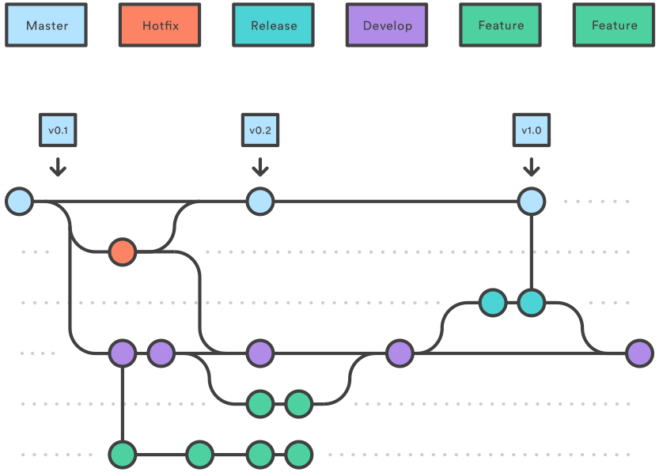
Installation and configurations
Installing Git
Windows and Mac
Download and install Git from https://git-scm.com/downloads.
When done, open Git Bash
Linux
Open a Terminal window and type:
sudo apt install git git-lfs git-flow
Git configuration
On Git Bash or in the Terminal:
- Type
git config --global user.name "Firstname Lastname" - Type
git config --global user.email "myadresse@ird.fr"
Note
These two lines identify you in the history of a project.
- Type
git config --global --listto see the global git configuration.
Getting started with Git in local
Git architecture
Workspace: your working directory \(\rightarrow\) your computerLocal: the local repository \(\rightarrow\) contains the history of your projectIndex: a buffer betweenWorkspaceandLocal\(\rightarrow\) list of the files that will be sent fromWorkspacetoLocalgit add: the command to add the file(s) in theIndexgit commit: the command to validate the changes (moves the files fromIndextoLocal)
Getting started
- Create a folder called
training-gitby typingmkdir training-git - Move to the folder by typing
cd training-git - Type
ls -alrt - Type
git init - Type again
ls -alrt.
Note
A .git folder has appeared. It contains the full history of your project (Local repository)
- Type
git statusandgit log
First commit
Create a
README.mdfile. Typegit status\(\rightarrow\)README.mdis now inWorkspacebut not inIndexnor inLocalType
git add README.mdandgit status
flowchart LR idw(Workspace) -->|git add| idi(Index) classDef workspace fill:lightgray,stroke:black,color:black classDef index fill:lightblue,stroke:black,color:black classDef local fill:lightgreen,stroke:black,color:black classDef remote fill:yellow,stroke:black,color:black class idw workspace; class idi index;
- Type
git commit -m "First commit"and typegit log
flowchart LR idw(Index) -->|git commit| idl(Local) classDef workspace fill:lightgray,stroke:black,color:black classDef index fill:lightblue,stroke:black,color:black classDef local fill:lightgreen,stroke:black,color:black classDef remote fill:yellow,stroke:black,color:black class idw index; class idl local;
%%{init: { 'logLevel': 'debug', 'theme': 'base', 'gitGraph': {'rotateCommitLabel': true}}}%%
gitGraph
commit id: "0f0e96a"
Note
0f0e96a is a short version of the identifier of the commit
Second commit
- Open the
README.mdfile, add# Git trainingand save - Type
git status - Type
git diff
flowchart LR idw(Local) -->|git diff| idl(Workspace) classDef workspace fill:lightgray,stroke:black,color:black classDef index fill:lightblue,stroke:black,color:black classDef local fill:lightgreen,stroke:black,color:black classDef remote fill:yellow,stroke:black,color:black class idw workspace; class idl local;
- Type
git commit -m "Second commit" - Type
git log
%%{init: { 'logLevel': 'debug', 'theme': 'base', 'gitGraph': {'rotateCommitLabel': true}}}%%
gitGraph
commit id: "0f0e96a"
commit id: "c6dc2bc"
Creating tags
- Open the
README.mdfile and add## Version v1.0.0. - Type
git add README.md - Type
git commit -m "Third commit" - Type
git tag v1.0.0andgit log
%%{init: { 'logLevel': 'debug', 'theme': 'base', 'gitGraph': {'rotateCommitLabel': true}}}%%
gitGraph
commit id: "0f0e96a"
commit id: "c6dc2bc"
commit id: "07e8835" tag: "v1.0.0"
- Type
git tagto list all existing tags
Ignoring files
It is possible to tell Git to ignore some files by using a .gitignore file.
- Create an empty
output.logfile and typegit status - Create a
.gitignorefile and write*.log. Type againgit status
The output.log file does not appear as an Untracked file anymore
- Type
git add .gitignoreandgit status - Type
git commit -m "Fourth commit"
%%{init: { 'logLevel': 'debug', 'theme': 'base', 'gitGraph': {'rotateCommitLabel': true}}}%%
gitGraph
commit id: "0f0e96a"
commit id: "c6dc2bc"
commit id: "07e8835" tag: "v1.0.0"
commit id: "9670a59"
Tip
To list the ignored files, type git ls-files --others --ignored --exclude-from=.gitignore
Moving in the history
- Type
git checkout v1.0.0\(\rightarrow\) move to a tag
%%{init: { 'logLevel': 'debug', 'theme': 'base', 'gitGraph': {'rotateCommitLabel': true}}}%%
gitGraph
commit id: "0f0e96a"
commit id: "c6dc2bc"
commit id: "07e8835" tag: "v1.0.0" type:HIGHLIGHT
commit id: "9670a59"
- Type
git checkout 0f0e96a\(\rightarrow\) move to a specific commit
%%{init: { 'logLevel': 'debug', 'theme': 'base', 'gitGraph': {'rotateCommitLabel': true}}}%%
gitGraph
commit id: "0f0e96a" type:HIGHLIGHT
commit id: "c6dc2bc"
commit id: "07e8835" tag: "v1.0.0"
commit id: "9670a59"
- Type
git checkout main\(\rightarrow\) move at the latest commit (replacemainbymasterif the latter is the name of the main branch)
%%{init: { 'logLevel': 'debug', 'theme': 'base', 'gitGraph': {'rotateCommitLabel': true}}}%%
gitGraph
commit id: "0f0e96a"
commit id: "c6dc2bc"
commit id: "07e8835" tag: "v1.0.0"
commit id: "9670a59" type:HIGHLIGHT
Tip
HEAD is a symbolic reference pointing to wherever you are in your commit history, as shown in git log
Display differences
- Type
git diff 0f0e96a v1.0.0\(\rightarrow\) compares a commit and a tag.
Warning
Order matters when using git diff. Differences are shown with the reference state considered to be the first argument.
flowchart LR id1(0f0e96a)-->|git diff| id2(v1.0.0) classDef workspace fill:lightgray,stroke:black,color:black classDef index fill:lightblue,stroke:black,color:black classDef local fill:lightgreen,stroke:black,color:black classDef remote fill:yellow,stroke:black,color:black class id1,id2 local;
Type
git diff 0f0e96a c6dc2bc\(\rightarrow\) compares two commits.Type
git diff 0f0e96a HEAD\(\rightarrow\) compares where you are in the history (HEAD) with a given commit.
Using Git with online server (GitHub)
Using remotes
In addition of saving the history, Git has other advantages. It allows to:
- Save a project remotely
- Synchronization with different computers (laptop, HPCs)
- Share a project (codes, packages) with the community
- Reproducible science
To do so, a \(4^{th}\) component in the Git architecture must be considered: the Remote repository. It contains a remote version of the history of your project
flowchart LR
idw(Workspace)
idi(Index)
idl(Local)
idr(Remote)
idw -->|git add| idi
idi -->|git commit| idl
idl -->|git push| idr
idr --->|git pull| idw
idr --->|git fetch| idl
classDef workspace fill:lightgray,stroke:black,color:black
classDef index fill:lightblue,stroke:black,color:black
classDef local fill:lightgreen,stroke:black,color:black
classDef remote fill:yellow,stroke:black,color:black
class idw workspace;
class idi index;
class idl local;
class idr remote;
Remote hosts
There are several remote hosting possibilities:
Commercial hosts:
- GitHub: https://github.com/
- GitLab: https://gitlab.com/
Institutional hosts:
- GitLab IRD: https://forge.ird.fr/
- GitLab Ifremer https://gitlab.ifremer.fr/
In the following, we will use GitHub.
Tip
GitHub proposes extra-features for students, teachers and researchers. Visit https://education.github.com/benefits for more informations
Creation of a GitHub repository
- On your GitHub page, click on
Repositories - Click on the the green
Newbutton - Set the name of your remote repository. Leave the other fields empty
- Click on
Create repository

Creation of a personal access token
To authentificate, you need to create an authentification token (see GitHub authentification of details for details).
To do so, click on your profile photo and then on Settings:
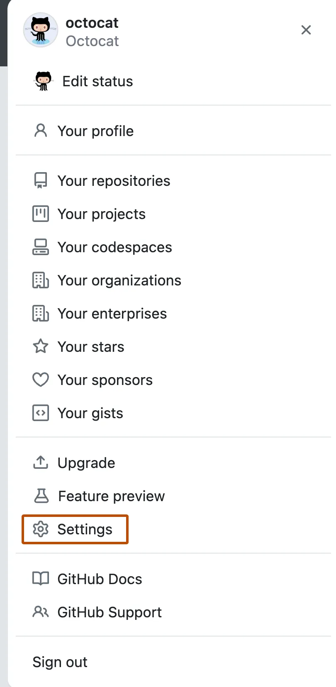
Creation of a personal access token
- In the left sidebar, click on
Developer settings. - Under
Personal access tokens, clickTokens (classic). - Select
Generate new tokenandGenerate new token (classic).
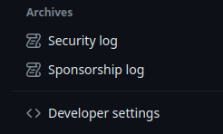
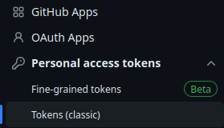
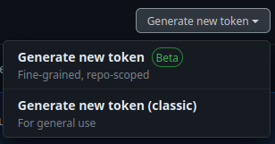
Creation of a personal access token
- Add a description note and click on the “repo” box, as shown below:
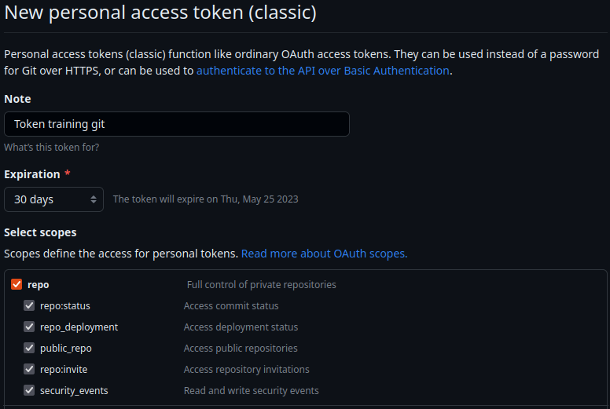
Click on the
Generate tokenbox button.Copy and save in a
.txtfile or in a Password manager tool (KeePassXC) the token: this is your password! It should look like something like this:
ghp_***************************************Linking Git local and remote
- In
TerminalorGit Bash, type the following line:
git remote add origin https://github.com/barriern/git-train.git
Warning
Replac barriern by your GitHub login and git-train by the name of your GitHub repository.
- It connects your Local repository with a remote one, called origin
flowchart LR
idl(Local)
idr("Remote\n(origin)")
idl-->idr
idr-->idl
classDef workspace fill:lightgray,stroke:black,color:black
classDef index fill:lightblue,stroke:black,color:black
classDef local fill:lightgreen,stroke:black,color:black
classDef remote fill:yellow,stroke:black,color:black
class idw workspace;
class idi index;
class idl local;
class idr remote;
- Type
git remote -vv
Linking Git local and remote
Now that the local and remote repositories are linked, the same thing must be done with the branches.
- Type
git branch -M mainby replacingmainby the name of the remote branch on GitHub. It will rename the local branch with the same name. - Type
git push -u origin main
It connects the local and remote main branches (-u option) and sends the commits to the remote branch
flowchart LR
idl("Main\n(Local)")
idr("Main\n(Remote)")
idl-->idr
idr-->idl
classDef workspace fill:lightgray,stroke:black,color:black
classDef index fill:lightblue,stroke:black,color:black
classDef local fill:lightgreen,stroke:black,color:black
classDef remote fill:yellow,stroke:black,color:black
class idw workspace;
class idi index;
class idl local;
class idr remote;
- Type
git branch -vv
Linking Git local and remote
Have a look at your repository on GitHub. Tags are missing!
Type git push --tags and refresh the GitHub page.
flowchart LR
idl(Local)
idr("Remote")
idl-->|git push|idr
classDef workspace fill:lightgray,stroke:black,color:black
classDef index fill:lightblue,stroke:black,color:black
classDef local fill:lightgreen,stroke:black,color:black
classDef remote fill:yellow,stroke:black,color:black
class idw workspace;
class idi index;
class idl local;
class idr remote;
Note
No need to specify the -u origin main arguments since the two branches are already connected.
Navigate on the GitHub page to see what has been done.
Synchronization from the remote
In GitHub, click on the
README.mdfile and then on the edit buttonAdd a
Update from Githubline and click onCommit changes
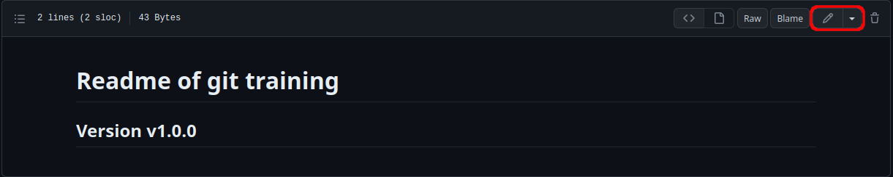
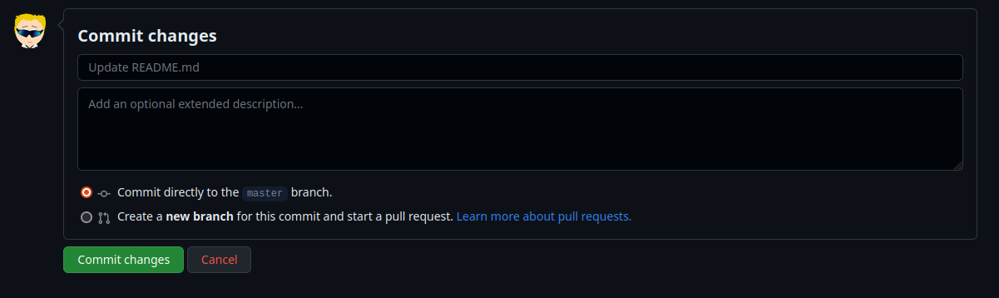
The Remote change of README.md is not yet visible in Workspace!
- In
Git BashorTerminal, typegit pull
flowchart RL
idr(Remote)
idw(Workspace)
idr -->|git pull| idw
classDef workspace fill:lightgray,stroke:black,color:black
classDef index fill:lightblue,stroke:black,color:black
classDef local fill:lightgreen,stroke:black,color:black
classDef remote fill:yellow,stroke:black,color:black
class idw workspace;
class idi index;
class idl local;
class idr remote;
- Look again at the
README.mdfile on your computer. You should see the update.
Synchronization: conflicts
- On GitHub, add
x = 1at the end of theREADME.mdfile. Do not type pull! - On your computer, edit the
README.mdand addx = 2. - Type
git add README.md - Type
git commit -m "Fifth commit" - Type
git push. An error occurs because changes inRemotehave not been pulled inLocal. - Type
git pullandgit status. An error occurs because there is a conflict in theREADME.mdfile which cannot be solved by Git.
%%{init: { 'logLevel': 'debug', 'theme': 'base', 'gitGraph': {'rotateCommitLabel': true}}}%%
gitGraph
commit id: "0f0e96a"
commit id: "c6dc2bc"
branch origin/main
commit id: "x = 1"
checkout main
commit id: "x = 2"
Synchronization: conflicts
- Open the
README.mdfile. You should see:
<<<<<<< HEAD
x = 2
=======
x = 1
>>>>>>> 70a4c105e377db282c0769606960f0afcccdd071Warning
These are conflicts markers. Git does’t know whether to chose x = 1 or x = 2. This is your job
- Open the file, replace the above by
x = 3. Commit and push the changes
%%{init: { 'logLevel': 'debug', 'theme': 'base', 'gitGraph': {'rotateCommitLabel': true}}}%%
gitGraph
commit id: "0f0e96a"
commit id: "c6dc2bc"
branch origin/main
commit id: "x = 1"
checkout main
commit id: "x = 2"
merge origin/main tag: "x = 3"
Cloning an existing repository
- In
TerminalorGit Bash, typecd .. - Now type
git clone https://github.com/umr-marbec/git-training
flowchart RL
idr(Remote)
idw(Workspace)
idr -->|git clone| idw
classDef workspace fill:lightgray,stroke:black,color:black
classDef index fill:lightblue,stroke:black,color:black
classDef local fill:lightgreen,stroke:black,color:black
classDef remote fill:yellow,stroke:black,color:black
class idw workspace;
class idi index;
class idl local;
class idr remote;
- Type
git logto see the full history. - To update the project, type
git pull
Warning
Do not clone or initialize a Git repository in another Git repository!
Create a repository the simple way
To create a new repo more simply than done here:
- Create a repo. on GitHub with a
README.mdfile and eventually aLICENCEfile. - Clone the repo.
- You are all set!
- The
remoteandlocalrepositories are synchonized - The
remoteandlocalmain branches are synchonized
- The
Conclusion: good practice
- Before starting editing a project, do a
git pull - Commit very often using
git commitextensively - Push often as well using
git push - Use
git statusextensively to know what you have done
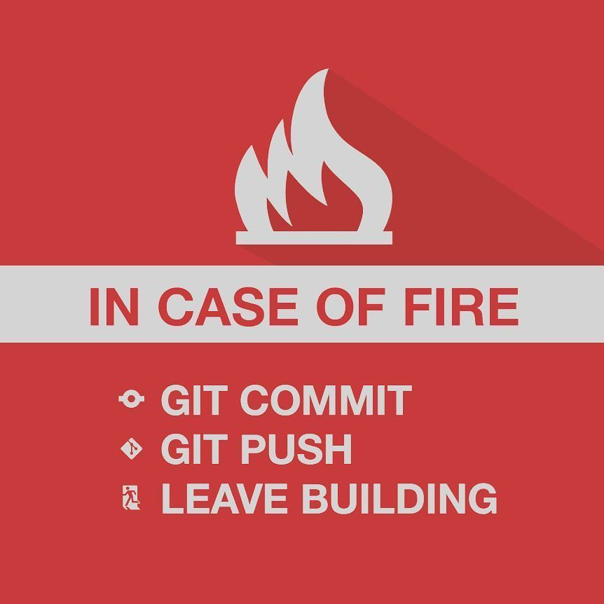
Git clients
Git clients: what is it?
Git Clients are softwares that facilitate the use of Git (see Git Guis for a list).
Beside, most code editors include Git functionalities
Git clients
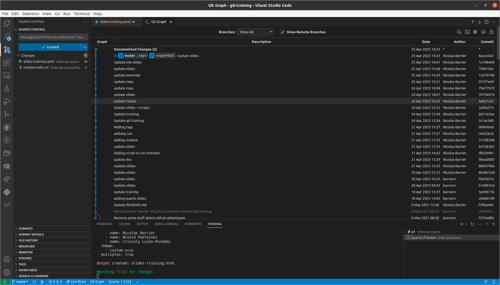Figure 3: VSCode
Git clients
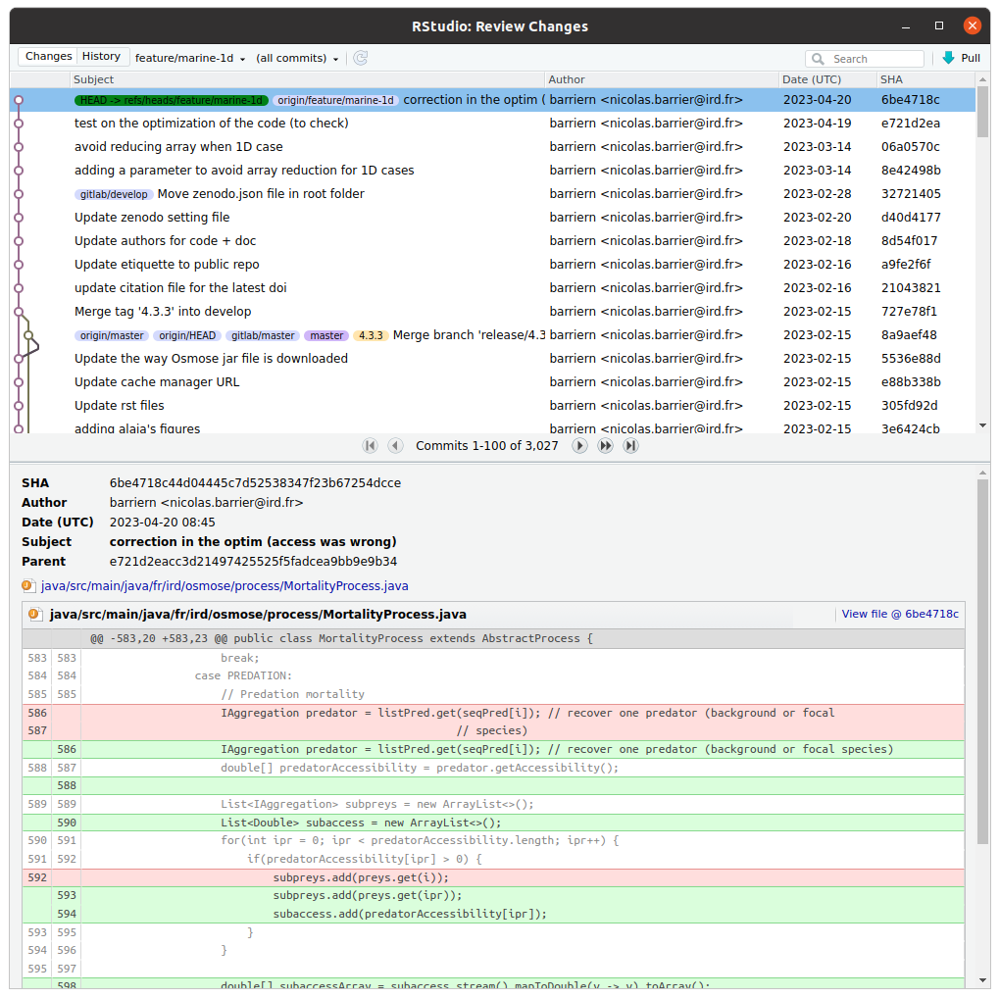Figure 4: RStudio
Git clients
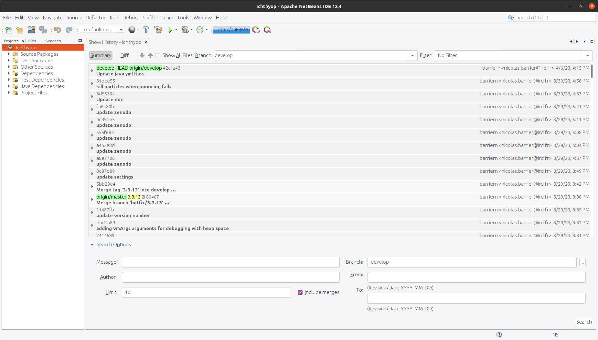Figure 5: Netbeans
Going further
Going further…
For those who want, extra slides are available on:
- Git with Large File Storage extension.
- Working with branches, i.e. derivates of a project
%%{init: { 'logLevel': 'debug', 'theme': 'base', 'gitGraph': {'rotateCommitLabel': true}}}%%
gitGraph
commit id: "0f0e96a"
commit id: "c6dc2bc"
branch bugfix
branch develop
checkout develop
commit id: "214e348"
checkout main
commit id: "69bbd79"
merge develop
checkout develop
branch feature
commit id: "0a9ba0c"
checkout bugfix
commit id: "d9d02608"
Large file storage
To version (reasonably) large files (images, data samples) \(\rightarrow\) Git with LFS extension.
Warning
Make sure that the remote host is compatible with LFS (GitHub is compatible)
- Type
git lfs installto activate the extension - Create a
data.csvfile and addYear,Size,Species - Type
git lfs track "*.csv"
A .gitattributes file has appeared, which list all the file extensions managed by Git LFS.
Large file storage
- Type
git add .gitattributes data.csv - Type
git commit -m "Using LFS" - Type
git push - On GitHub, click on your file
data.csvfile.
Creating aliases
To create Git aliases (i.e. shortcuts):
- Type
git config --global alias.tree log --all --decorate --oneline --graph - Type
git config --global alias.br branch -vv - Type
git config --global alias.re remove -vv
You can now call the git tree, git br and git re commands.
Creating branches
- Type
git checkout -b develop - Type
git status,git brandgit tree - Open the
README.mdfile, add some text and save. - Type
git add README.md - Type
git commit -m "3rd commit" - Type
git brandgit tree
%%{init: { 'logLevel': 'debug', 'theme': 'base', 'gitGraph': {'rotateCommitLabel': true}}}%%
gitGraph
commit id: "0f0e96a"
commit id: "c6dc2bc"
branch develop
commit id: "214e348"
Switching branch
- Type
git checkout main(orgit checkout master) - Type
git br - Open the
LICENCEfile and add some text in it - Type
git add LICENCE - Type
git commit -m "Third commit" - Type
git tree
%%{init: { 'logLevel': 'debug', 'theme': 'base', 'gitGraph': {'rotateCommitLabel': true}}}%%
gitGraph
commit id: "0f0e96a"
commit id: "c6dc2bc"
branch develop
checkout develop
commit id: "214e348"
checkout main
commit id: "69bbd79"
Merging branches
- On the
mainbranch, typegit merge develop -m "merge-develop" - Type
git logandgit tree
%%{init: { 'logLevel': 'debug', 'theme': 'base', 'gitGraph': {'rotateCommitLabel': true}}}%%
gitGraph
commit id: "0f0e96a"
commit id: "c6dc2bc"
branch develop
checkout develop
commit id: "214e348"
checkout main
commit id: "69bbd79"
merge develop
The merge command puts the commits from the argument branch (here develop) and puts them into the current branch (here main).
Note
During the merging process, another commit is created
Creating branch from another branch
- Type
git checkout -b feature develop - Create a
script.Rfile - Type
git add script.R - Type
git commit -m "Fourth commit"
%%{init: { 'logLevel': 'debug', 'theme': 'base', 'gitGraph': {'rotateCommitLabel': true}}}%%
gitGraph
commit id: "0f0e96a"
commit id: "c6dc2bc"
branch develop
checkout develop
commit id: "214e348"
checkout main
commit id: "69bbd79"
merge develop
checkout develop
branch feature
commit id: "0a9ba0c"
Creating branch from a commit
- Type
git checkout -b feat-com 1831e4ereplacing1831e4eby an actual commit ID. - Create a
script.pyfile - Type
git add script.pyandgit commit -m "Sixth commit"
%%{init: { 'logLevel': 'debug', 'theme': 'base', 'gitGraph': {'rotateCommitLabel': true}}}%%
gitGraph
commit id: "0f0e96a"
commit id: "c6dc2bc"
branch feat-com
branch develop
checkout develop
commit id: "214e348"
checkout main
commit id: "69bbd79"
merge develop
checkout develop
branch feature
commit id: "0a9ba0c"
checkout feat-com
commit id: "d9d02608"
Differences between branches
- Type
git diff develop main
Warning
Order matters: it shows what has been added to main branch compared to the develop branch
flowchart LR id1(Develop)-->|git diff| id2(Main) classDef workspace fill:lightgray,stroke:black,color:black classDef index fill:lightblue,stroke:black,color:black classDef local fill:lightgreen,stroke:black,color:black classDef remote fill:yellow,stroke:black,color:black class id1,id2 local;
Deleting a branch
- Type
git checkout main - Type
git branch -d develop - Type
git br - Type
git branch -d feat-com
An error occurs! The suppression of feat-com implies the loss of the d9d02608 commit. To force the suppression, use -D instead of -d.
- Type
git branch -D feat-com
Note
The suppression of develop was ok because the content of commit 3rd is included in the merge.
Reverting a commit
- Type
git revert c6dc2bc(replacec6dc2bcby your commit id)
%%{init: { 'logLevel': 'debug', 'theme': 'base', 'gitGraph': {'rotateCommitLabel': true}}}%%
gitGraph
commit id: "0f0e96a"
commit id: "c6dc2bc"
commit id: "-c6dc2bc" type: REVERSE
Remainder
Basic commands
git init: initialise a git project (create .git folder)git add [files]: add files to list of tracked filesgit commit -m ”message”: validate locally a version of the projectgit status: see the unvalidated and untracked changesgit checkout [commit]: load the project version corresponding to the indexgit pull: import the changes from remote project to localgit push: export the changes from local project to the remote server
Git configuration (mandatory)
- Configure your identity:
git config --global user.name "Firstname Lastname" - Configure your e-mail:
git config --global user.email "myadresse@ird.fr"
Branch handling
git branch [branch_name]: create a new branch (but you remain on the previous branch)git branch -b [branch_name]: create a new branch and move to this newly created branchgit checkout [branch_name]: move to the corresponding branchgit merge [branch_name1] [branch_name2]: merge two different branch, you may need to resolve version conflict.git branch -d [branch_name1]: delete a branch (safe mode)git branch -D [branch_name1]: delete a branch (unsafe mode)
Linking with remote
git clone [URL]: Import an existing project from remote server.git remote add origin [URL]: link directly the local repository with a remote
Authentication of your computer and the remote server
- SSH key: easy way on Linux distributions
- Authentication Token
Good practices
- Pull before any work on the project
- Commit as frequently as possible
- Write explicit commit message
- Push regularly
IDE (graphical user interface) with Git
- R
- RStudio
- Visual Studio Code
- Python
- Spyder
- Visual Studio Code
- Pycharm (all JetBrain softwares)
Sources
- Plateau bioinformatique, Montpellier: Formation Git(Lab) (05/04/2018)
- UMR AMAP (Atelier MAIA P3M), Montpellier: Introduction à GIT (04/04/2019)